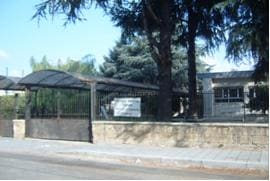
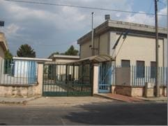

Lista Civica · Portico in Comune
Lista Civica · Portico in Comune
Candidato Sindaco · Portico di Caserta
Facciamo
funzionare
le cose.

Non è uno slogan, è una necessità che tutti vediamo ogni giorno. Negli ultimi anni il paese ha rallentato, ha perso occasioni, ha smesso di crescere come poteva. Strade, servizi, spazi pubblici: troppe cose sono rimaste ferme. E quando un paese si ferma, non perde solo tempo. Perde fiducia.
Portico ha energie, ha persone, ha una comunità che chiede di essere ascoltata e rispettata nei fatti. La priorità è rimettere il Comune in funzione: valorizzare chi già lavora all'interno, rafforzare la struttura, rendere gli uffici più efficienti.
A questo impegno diamo subito una forma concreta: un elenco chiaro di interventi nei primi cento giorni. Non un annuncio, ma un atto di responsabilità con obiettivi definiti e tempi verificabili.
Un metodo di amministrazione basato su priorità definite, atti concreti e tempi verificabili. Quattro direzioni chiare dentro cui si collocano tutte le scelte iniziali.
Dodici consiglieri candidati insieme a Cosimo Cristillo. Persone diverse, con esperienze e competenze, unite da una scelta semplice: metterci la faccia per Portico.


Servizi digitali, sportelli dedicati, trasparenza e risposta ai cittadini
🏛Piazze, scuola, giovani, anziani, commercio e cultura locale
🔨Cantieri fermi, teatro, strade, zona industriale e PUC
📋Piano operativo con obiettivi definiti e tempi verificabili
Far funzionare il Comune è il primo vero atto politico. Senza un'amministrazione che lavora e risponde, nessun progetto può reggere nel tempo.
La macchina comunale ha bisogno di essere rafforzata. Pochi dipendenti, un'organizzazione fragile, servizi che faticano a stare al passo. L'obiettivo è rimettere il Comune nelle condizioni di funzionare davvero.
Il potenziamento dei servizi digitali sarà centrale: SPID, Carta d'Identità Elettronica, richieste online. Ma senza lasciare indietro nessuno: rafforzeremo gli sportelli fisici in collaborazione con CAF e patronati del territorio.
Attiveremo un canale WhatsApp istituzionale per segnalare problemi in tempo reale e ricevere aggiornamenti. Costruiremo un Comune più giusto: pagamenti flessibili, rateizzazioni chiare, regolarizzazione spontanea dei tributi.
Istituiremo uno Sportello Sociale per mappare i bisogni reali, uno Sportello Disabili come punto stabile di ascolto per le famiglie, e un Punto Donna come spazio sicuro di orientamento e tutela.
Un paese vive quando i suoi spazi, le sue energie e le sue relazioni tornano a muoversi. Il decoro urbano è il primo segnale di rispetto verso i cittadini.
Portico ha troppe aree abbandonate, troppi luoghi che potrebbero essere vissuti e non lo sono. Vogliamo ripartire dai luoghi: dal loro recupero, dalla loro cura e dalla loro funzione.
Le piazze devono tornare a essere il cuore della comunità. Piazza Berlinguer va riaperta e restituita, Piazza degli Artisti riqualificata, Piazza Rimembranza sostenuta con iniziative concrete che riportino vita nel centro del paese.
Ridare vita a Portico significa soprattutto investire sui giovani: Forum dei Giovani, Consiglio dei Ragazzi, luoghi di aggregazione, sport, adozione del programma UNICEF. E allo stesso tempo riconoscere il ruolo degli anziani, valorizzandone l'esperienza attraverso i Nonni Civici.
Il commercio locale merita supporto: una Consulta permanente, un'area mercato organizzata, una fiera settimanale degna di questo nome. Perché ridare vita a Portico significa rimettere in movimento spazi, attività e relazioni.
La scuola di via Principe di Piemonte è il simbolo più evidente di un fallimento. Un edificio abbattuto e, dopo anni, ancora un cantiere aperto. Su questo non ci saranno più ritardi, né giustificazioni.
La prima cosa sarà un'operazione verità. I cittadini hanno il diritto di sapere cosa è successo, perché i lavori sono fermi e di chi sono le responsabilità. Poi tempi certi con un cronoprogramma pubblico e verificabile.
Avvieremo un piano immediato di riqualificazione degli edifici scolastici: scuola media di via Trento, plessi dell'infanzia di via Collodi, strutture di Musicile. Non solo manutenzione, ma restituire dignità agli spazi in cui crescono i nostri ragazzi.
Attiveremo finalmente l'asilo nido di via Collodi, inaugurato ma mai realmente aperto. Un servizio fondamentale per le famiglie non può restare inutilizzato.
Sul fronte culturale: sosterremo l'archivio digitale dei Canti di Sant'Antuono, costruiremo un programma annuale attorno alla Festa di Sant'Antonio Abate, istituiremo la Consulta delle associazioni e realizzeremo una biblioteca comunale con sale lettura e spazi studio.
Portico oggi è ferma. Cantieri aperti da anni, opere incompiute, interventi mai conclusi. La priorità è chiudere ciò che è rimasto aperto troppo a lungo.
Non è più accettabile che il Teatro Comunale resti incompiuto. Deve essere completato e diventare il centro della vita culturale di Portico: uno spazio vivo, aperto, capace di ospitare eventi e formazione.
Le strade sono in condizioni inaccettabili. Interverremo con un piano di manutenzione e decoro urbano con cronoprogramma chiaro e verificabile. Gli allagamenti non possono più essere considerati un problema ciclico: il sistema fognario sarà affrontato in modo definitivo.
Il Piano Urbanistico Comunale tornerà a essere uno strumento dell'amministrazione, non solo tecnico ma politico: programmazione dello sviluppo urbano, tutela del territorio, condizioni certe per cittadini e imprese.
La Zona Industriale sarà potenziata con servizi, sicurezza e viabilità. Il Centro Polifunzionale diventerà il cuore dello sviluppo: Agenzia Giovani, Sportello Imprese, formazione, inserimento lavorativo.
Segna Portico in Comune sulla scheda e scrivi Cosimo Cristillo come preferenza di voto.
🏪 Dove si vota – Sezioni elettorali


Verifica la tua sezione di appartenenza sulla tessera elettorale.